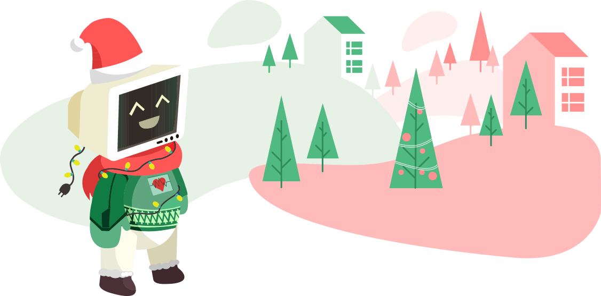

Crăciun din inimă de student
Asociația Studenților Informaticieni Ieșeni, în parteneriat cu Facultatea de
Informatică Iași vă invită să deveniți eroii preferați ai unor copiii cu ocazia desfășurării a
Ediției a 16-a a Balului de Caritate “Crăciun din inimă de student”. Anul acesta ai
oportunitatea de a răspândi căldura sărbătorilor. Devino unul dintre spiridușii Moșului și
împarte momente de bucurie copiilor cu dizabilități și probleme neuropsihice.

 Au mai rămas
Au mai rămas
Au mai rămas
Zile
Ore
Minute